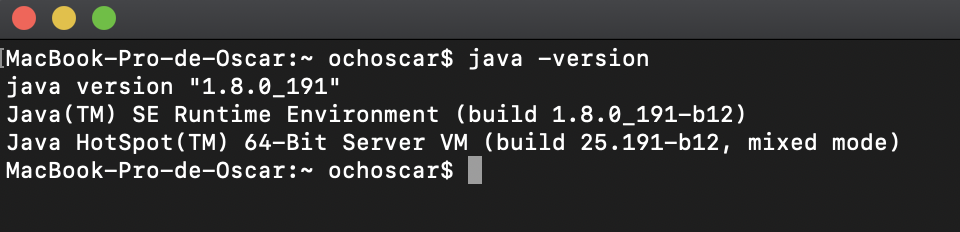
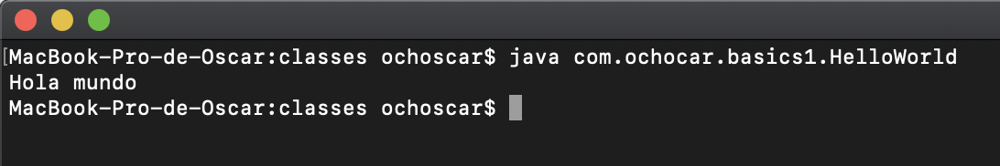

CONCEPTOS BÁSICOS DE JAVA III
CONTENIDO
1. Ejecución de programas Java1. Ejecución de programas Java
Cuando pensamos en ejecutar programas Java para el escritorio requerimos hacerlo desde una consola o terminal, es importante para el ambiente cuente con el comando java instalado y sea accesible desde el lugar o directorio donde se ejecute el comando. En la figura 1 se muestra un ejemplo de ejecución del comando java -version que muestra la versión de la máquina virtual de Java que ejecutará el comando. Es importante reconocer que también existen otros comandos para compilar como javac o algunas utilidades para revisar la carga de memoria o el comportamiento del procesador y que estas utilidades están disponibles en la carpeta bin de la instalación. Para este punto lo más normal es compilar y ejecutar los archivos java utilizando un Entorno Integrado de Desarrollo o IDE como Eclipse, NetBeans o IntelliJ.

Ahora, una vez que el comando java se encuentra disponible se podrán ejecutar programas java simplemente pasando el archivo .class como parámetro de Java y teniendo presente la jerarquía de paquetes donde se almaceno nuestra clase, por ejemplo la figura 2 muestra la ejecución del programa HolaMundo mostrado en el listado de código 1.

public class HolaMundo {
public static void main(String args[]) {
System.out.println("Hola mundo");
}
}Aquí se puede comprender el método main que es el punto de entrada para la ejecución de instrucciones en Java y el mismo debe ser estático para que la JVM pueda llamar el método sin necesidad de instanciar la clase HolaMundo, también debe ser público para que la JVM pueda ver el método, debe llamarse main específicamente puesto que con este nombre lo buscará la JVM y finalmente pueden pasarse una serie de parámetros a manera de arreglo de String, estos parámetros son enviados en el momento de la ejecución en la línea de comandos, y simplemente mencionar que si se envían parámetros que contengan espacios y estos van a ser interpretados como un solo ítem en el arreglo args debera escribirse entre comillas dobles.
Alternativamente se pueden ejecutar los programa java si el proyecto es empaquetado como un jar, es decir, como un archivo comprimido java el cual contiene un conjunto de archivos .class y un archivo manifiesto que indica cual de las clases es la principal y que a su vez contiene un método main que será utilizado para iniciar la ejecución de instrucciones. El comando necesario para ejecutar un jar es el siguiente: java -jar ArchivoJAVAJAR.jar. Si el archivo jar no contiene un manifiesto o la clase principal no contiene un main con las consideraciones descritas nos será posible ejecutarlo.